Aprender lutheria es mucho mas que construir una guitarra.
Transmitimos años de oficio, herramientas reales y procesos que convierten la curiosidad en conocimiento aplicado.
Conoce nuestros cursos
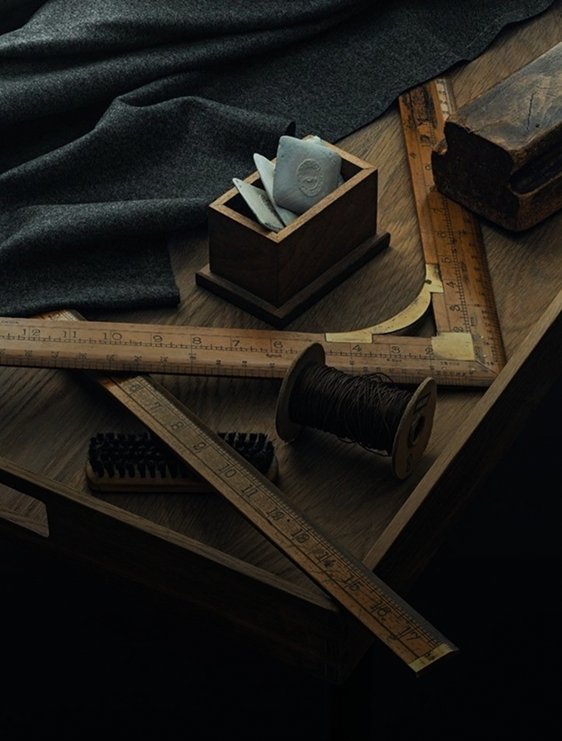
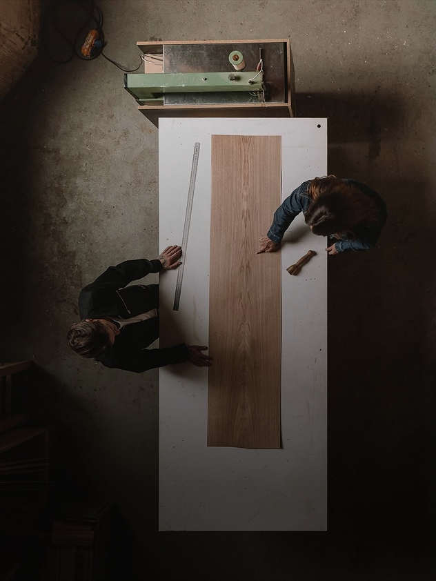
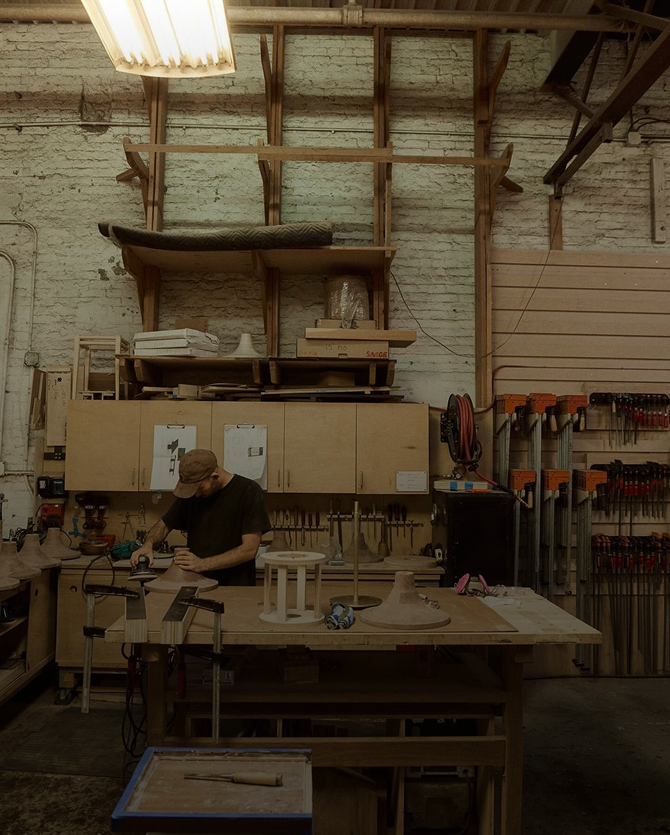
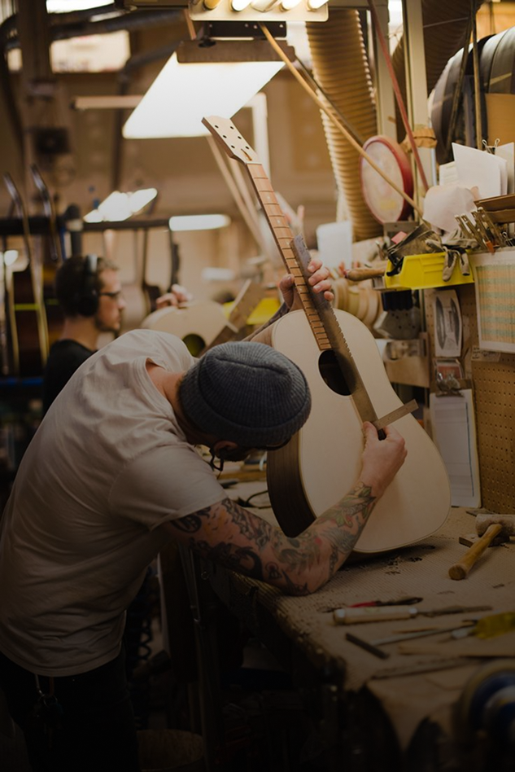
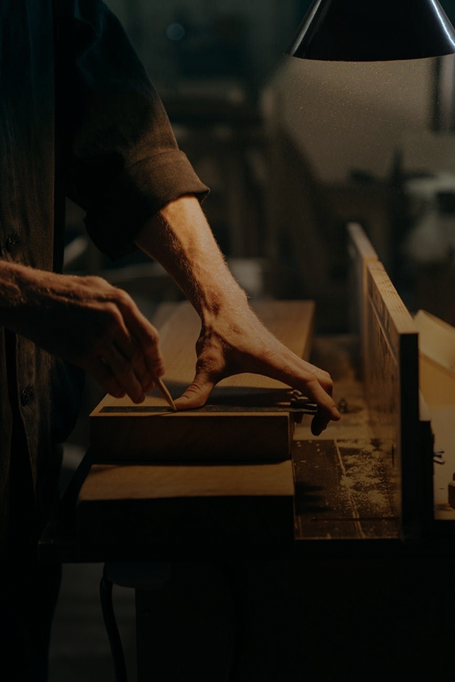
Transmitimos años de oficio, herramientas reales y procesos que convierten la curiosidad en conocimiento aplicado.
Conoce nuestros cursosFormando personas y construyendo instrumentos de manera artesanal.
Aprendes trabajando sobre materiales, herramientas e instrumentos.
Seguimiento personalizado durante todo el proceso de aprendizaje.
Personas que comenzaron desde cero y hoy siguen creando.
El lujo del tiempo bien empleado
Introduccion al oficio, anatomia del instrumento y criterio sonoro.
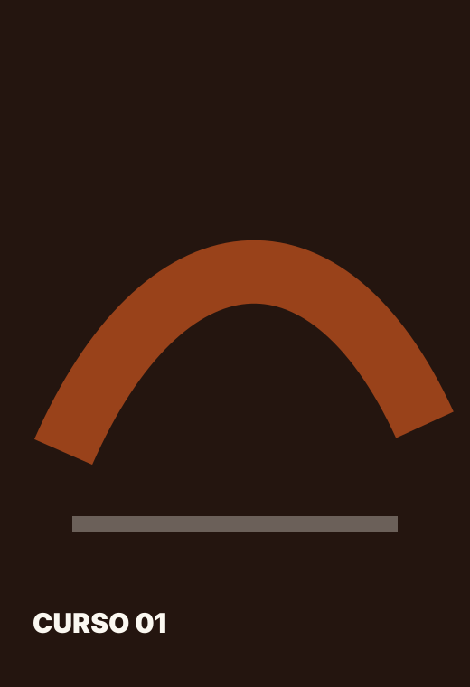
Proceso completo para construir una guitarra desde cero.
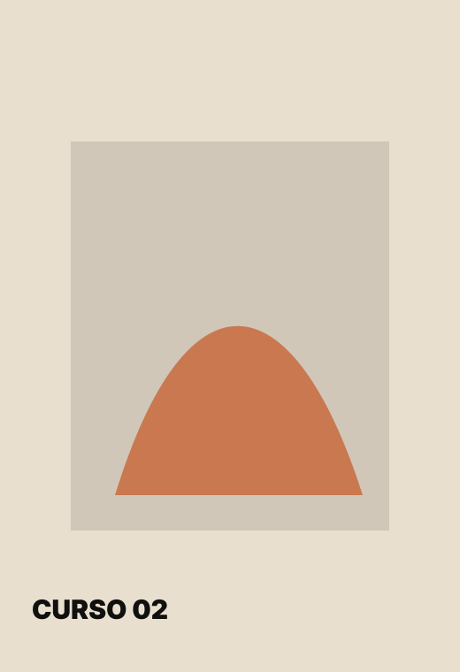
Profundizacion en ajustes, terminaciones y reparacion fina.
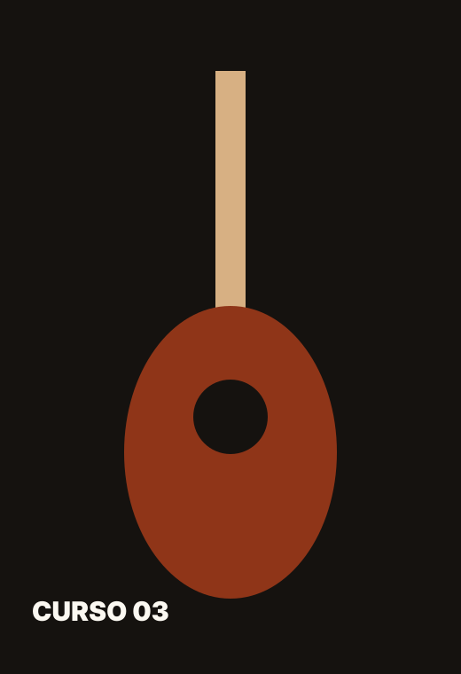
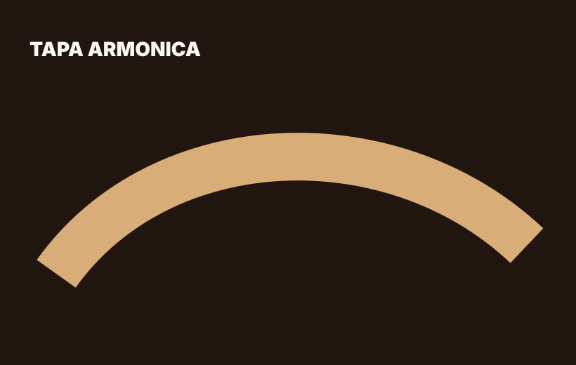
Componentes principales de una guitarra
La tapa vibra, proyecta y define gran parte de la voz del instrumento.
Materiales seleccionados. Construccion artesanal. Ajuste personalizado.
Conoce cada etapa.
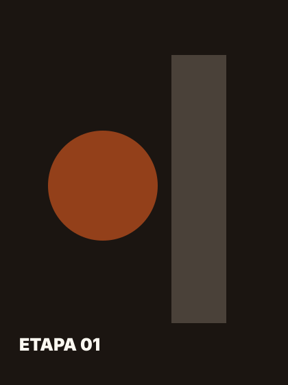
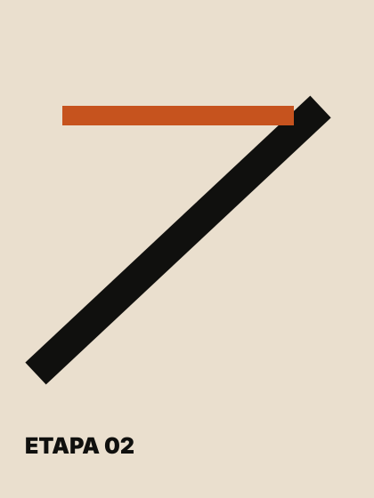
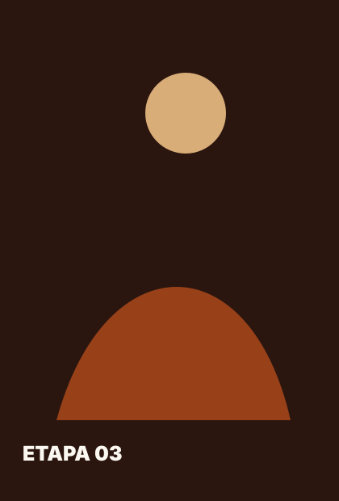
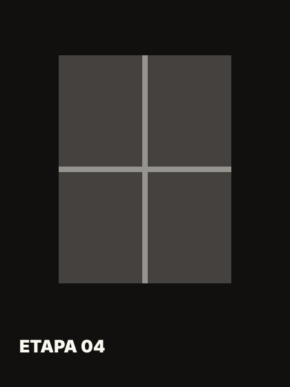
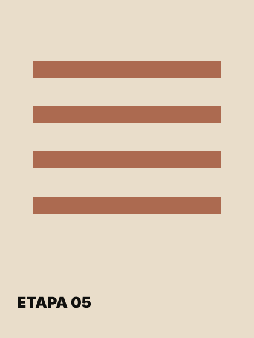